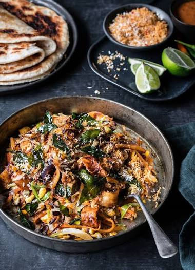

Image Source:dish.co.ns
Kottu roti alternatively spelled kothu roti, is a Sri Lankan dish consisting of chopped roti, a meat curry dish of choice (such as beef, mutton, seafood, chicken) along with scrambled egg, onions, and chillies. It originated in the Eastern regions of Sri Lanka, particularly the towns of Batticaloa and Trincomalee, from the Sri Lankan Moor community. The word Kottu is simplification of the Tamil word koththu, meaning chopped. A variation of the dish is found in the south Indian states of Tamil Nadu and Kerala, known as kothu parotta, which is made using parotta instead of roti. Kottu roti can also be found internationally in restaurants in regions containing Sri Lankan diaspora populations.
Kottu, is made up of paratha or wheat flour roti (Godamba roti), which is cut into small pieces or ribbons. Then on a heated iron sheet or griddle, vegetables and onions are fried. Eggs, cooked meat, or fish are added to fried vegetables and heated for a few minutes. Finally, the pieces of cut paratha are added. These are chopped and mixed by repeated pounding using heavy iron blades/spatula, the sound of which is very distinctive and can usually be heard from a long distance. Depending upon what ingredients are used, the variations are vegetable, egg, beef, chicken, mutton, and fish kottu roti. It is often prepared and served as a fast food dish.